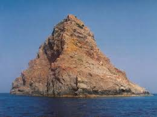

Jabuka
Jabuka je vulkanski otočić čunjastog oblika u Jadranu, zapadno od Visa. Strmih je obala i teško pristupačan i to tek za mirnog vremena sa jugozapadne strane. Na otoku se održala endemska vrsta crna gušterica Podarcis melisellensis pomoensis i biljni strogo zaštićeni endemi - jabučka zečina (Centaurea jabukensis) i žljezdasta zečina (Centaurea crithmifolia). Obje pripadaju u porodici Asteraceae.
Od 1958. otok je proglašen geološkim spomenikom prirode. Jabuka je 97 metara visoka klisura koja se nalazi mimo svih morskih putova, a u novije vrijeme postaje meta jedriličara. Okolno more bogato je ribom, posebice zubatcom poznatim i kao "car o' rib". Područje oko Jabuke, poznato kao Jabučka kotlina prirodno je mrijestilište riba i ostalih vrsta: oslića, škampi, bijelog muzgavca, lignjuna, grdobine i sl. Otok je nenaseljen.